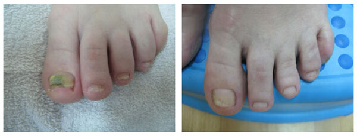

MENACE VOILÉE: DÉCOUVREZ LA VÉRITÉ EFFRAYANTE SUR LA MYCOSE AVANT DE FAIRE COUPER LES ONGLES!
développerSalutations, je m'appelle Alexandre. Il y a trois ans, je suis devenu VICTIME d'une maladie apparemment inoffensive comme une mycose des ongles! Personne ne parle ouvertement de choses aussi désagréables, mais je veux que le plus de gens possible connaisse ma terrible histoire et évite une expérience aussi amère.
Je veux commencer cette conversation sérieuse avec quelques statistiques:
Plus de 65% des personnes sont infectées par une légère forme de mycose des ongles et ne le savent même pas!
De plus, ils ne connaissent pas les conséquences auxquelles ils peuvent être confrontés. Et eux, faites confiance à mon expérience, ils sont effrayants.
Ma jambe après un traitement avec des pommades de pharmacie
CELA A COMMENCÉ SI SÛR QUE JE N'AI PAS PENSÉ QUE ÇA SIGNIFIAIT!
En général, toute infection fongique peut se manifester à tout moment . Que ce soit le stress, vos pieds mouillés, mon immunité a baissé. Dans mon cas, j'ai eu des infections respiratoires virales aiguës, et après une semaine j'ai commencé à remarquer des symptômes désagréables:
- - les pieds ont commencé à démanger, surtout quand ils ont été mouillés;
- - la peau a commencé à se décoller et à peler;
- - une forte odeur désagréable est apparue (même si je n'en ai jamais souffert);
- - l'ongle d’un gros orteil a commencé à jaunir et autour de lui - cela m’a fait mal.
SI VOUS AVEZ AU MOINS UNE FOIS UN TEL SYMPTÔME, NE CHERCHEZ PAS D'EXCUSES - DANS 95% DES CAS C'EST UNE MYCOSE, ET VOUS DEVRIEZ COMMENCER À SONNER L'ALARME!
Ma femme n'a pas sonné l'alarme et elle a juste enduit mes jambes de pommade salicylique la nuit.
“Nos grands-mères ont été traitées comme ça, peut-être que tout partira chez toi aussi!”
Ce peut-être n'a pas fonctionné avec moi, et après un certain temps, j'ai été obligé de courir chez le médecin, où on a coupé mon ongle à la racine.
Pensez-vous que cela a aidé?
Un an plus tard, lorsque l'ongle a pratiquement repoussé, LA MYCOSE A COMMENCÉ AVEC ENCORE PLUS DE PUISSANCE!
Mes ongles se sont transformés en un désordre dégoûtant, la vue duquel m’a rendu sentir malade, sans parler de mes proches. Il y avait une odeur sui de mes pieds et mes ongles s'effondraient. LES MÉDECINS N’ ONT PAS AIDÉ - ils ont seulement proposé de tout déraciner à nouveau.
Quel est le point si la mycose revient?
Je vous le dirai tout de suite.
IL N'Y A AUCUN MÉDICAMENT DANS LES PHARMACIES POUR TUER LA MYCOSE.
Ils masquent seulement les symptômes ou le rendent dormant pendant un certain temps, mais après un certain temps, l'infection continue de progresser. Je vous écrirai la vérité sur tous les remèdes que les médecins m'ont prescrits, pour lesquels j'ai laissé tomber une tonne d'argent, mais TOUT ÇA N’A PAS MARCHÉ.
1 option- Médicaments systémiques
Ils tuent la mycose, mais personne ne vous dira qu’ils tuent votre foie en un clin d'œil!
Ceci est généralement comparable au MORT-AUX-RATS avec lequel vous empoisonnez votre corps, seulement une dose plus petite.
2 option- Gouttes et vernis
Je pensais que c'était la seule issue pour moi, si une ALLERGIE EFFRAYANTE n'avais pas commencé chez moi. Il s'avère que c'est un phénomène courant, car l'empoisonnement toxicologique du corps commence immédiatement après l'application de l'agent antifongique sur la peau. C'est juste que quelqu'un est plus sensible, quelqu'un ne l'est pas.
Ils disent que la plupart des gens ont la même réaction que moi, MAIS ON VEND CES DROGUES TOUJOURS!!!
Tout en utilisant ces médicaments, j'ai pris des antihistaminiques sur l'insistance du médecin, et à la fin j'ai été emmené à l'hôpital avec une intoxication sévère). Dieu merci, ils m’a réanimé à temps, mais ils n'ont pas aidé avec la mycose, ils ont suggéré d'essayer à nouveau des remèdes populaires ...
LES REMÈDES POPULAIRES!!! À UN HOMME DONT LES ONGLES POURRENT! ET C'EST LA MÉDECINE DU XXIe SIÈCLE
Je ne pouvais plus supporter la douleur et juste pour la deuxième fois j'ai déchiré moi-même ma plaque à ongles.
Pensez-vous que mon histoire est une EXCEPTION AUX RÈGLES? Dans les hôpitaux, j'ai vu des foules de gens avec les mains et les pieds corrodés par la mycose !!! Indépendamment du sexe et de l’âge.
Je le répète - il n'est pas habituel de parler de ce problème, et très peu de gens qui ADMETTENT À EUX-MÊMES qu'ils ont la mycose!!
En attendant, même la moindre démangeaison des jambes est déjà un SIGNAL D'ALARME! Vos chaussures, vos chaussons de maison sont tous un INCUBATEUR pour la propagation de l'infection!

Je le répète - la mycose n'est acquis que dans certains cas. IL EST DÉJÀ PRÉSENT À CHACUN DE NOUS, il ne reste plus qu'à attendre le moment où il se montre DANS TOUTE SA SPLENDEUR, comme cela m'est arrivé! Et je suis sûr à 100% - vous ne serez pas prêt pour cela!
Demandez, pourquoi suis-je si intelligent et sais-je tout cela?
Il s'agit d'une mycose des ongles chez un bébé de 2 mois . D'où est-ce qu'elle est venue? Apparemment, pas par manque d'hygiène !! Et comment allez-vous traiter votre enfant - diluer les antifongiques dans le lait maternel? C'est ça!
Y A-T-IL UN SAUVETAGE?
J'ai réalisé que PERSONNE À PART MOI NE POUVAIT M'AIDER à résoudre ce problème. Par conséquent, je suis allé en ligne et j'ai commencé à étudier comment la mycose est traitée dans le MONDE CIVILISÉ.
Il s'avère que l'Occident utilise depuis longtemps le SEUL REMÈDE SÛR contre la mycose “ ” . C'est lui qui est considéré comme le plus efficace de tous. Il n'est pratiquement pas importé (de plus, la mafia de pharmacie a tout rempli de ses médicaments inutiles et nocifs).
Après avoir examiné en détail les revues, recherches et avis d'experts, j'ai conclu qu'il s'agissait d'un remède d'action multilatérale:
- - élimine tous les types connus et dangereux d'infections fongiques;
- - soulage les démangeaisons, la douleur et l'irritation;
- - désinfecte de 100%;
- - localise les zones d'inflammation (grâce à cela, la mycose ne se propage pas);
- - répare les cellules endommagées par l'infection;
- - élimine les mauvaises odeurs causées par les bactéries;
- - la peau reçoit l'hydratation nécessaire, il lui est plus facile de lutter contre l'infection;
VOUS POUVEZ SAVOIR TOUT SUR LE MÉDICAMENT ICI >>>
La composition de la crème contre la mycose m'a beaucoup impressionné.
Aucun de ses ingrédients ne provoque d'effets secondaires !! Par conséquent, il peut être utilisé par des personnes à tout âge et à tout stade de l'infection.
La mycose des ongles est un cas particulier d'application de la crème . En outre, le médicament est approprié pour se débarrasser de la plupart des infections fongiques connues , telles que la teigne.
Je me suis empressé de commander ce médicament pour moi-même. J'ai trouvé, Dieu merci, son fournisseur officiel et deux jours plus tard, le colis était dans mes bras.
Un traitement actif de mon infection fongique avancée a commencé, c'est mon VRAI SALUT!! Je ne sais pas combien j'aurais souffert davantage si je n'avais pas trouvé ce médicament à temps. J'ai ressenti un soulagement après quelques jours, et après un mois mon infection fongique avancée a complètement cessé de me déranger. Pour la première fois en 2,5 ans!
Pour la première fois depuis longtemps, j'ai remarqué qu’un ongle lisse, propre et sain a commencé à faire pousser!

Par conséquent, À TOUS QUI FONT FACE À L'HORREUR SIMILAIRE que moi-même, je recommande:
NE PERDEZ PAS DE TEMPS SUR UN TRAITEMENT INUTILE! Et n'attendez pas que l'infection progresse à un stade avancé et que la seule issue sera d'enlever complètement l'ongle.
POUR LE TRAITEMENT, ou la prévention de la mycose (et, croyez-moi, il vaut mieux la prévenir), je laisse les coordonnées du fournisseur chez qui j'ai directement commandé “ ” :
Prenez soin de vous et de votre santé!
J'espère que j'ai pu vous
aider!
Commentaires
Le texte est caché développer